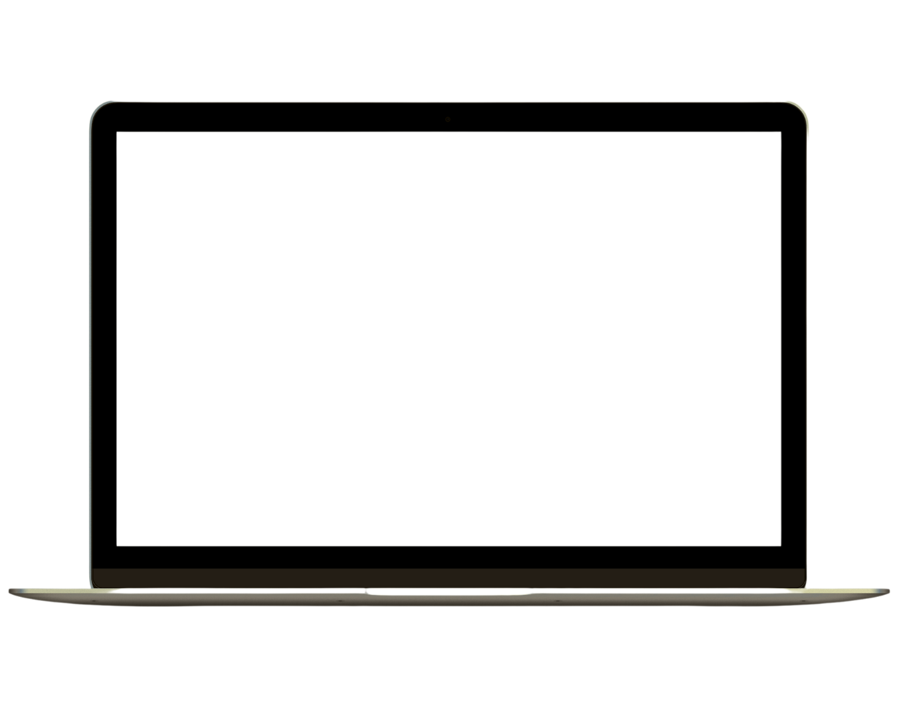

OCT-DEC 2024
Spotify Wrapped Experience


Front-end User Stories
-
Visual Aesthetics
As a user, I want to be able to view a presentation of the different aspects of my personal Spotify music listening tastes displayed in colorful and fun ways.
As a user, I want to see transition animations between each Spotify Wrapped page and hover effects on some of the pages. -
Accessibility and UI
As a user, I would like to be able to access the website on my phone with a well-designed and mobile friendly UI.
As a user, I would like to be able to toggle a dark-mode that applies to all UI on the website -
Personalization
As a user, I would like to create Spotify Wraps over short, medium, and long terms of my listening history.
As a user, I would like to be able to create and login to an account that saves my previously generated Spotify wraps. -
Additional Features
As a user, I would like to be able to hear clips from some of my top songs play during my Spotify Wrapped.
As a user, I would like to be able to access a “contact the developers” page where I can read more about the development team and easily send them feedback.

The Process
Planning


The Design Process


Building the App